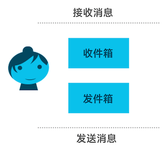
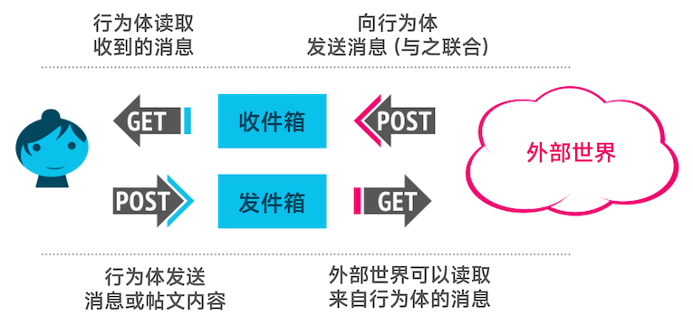
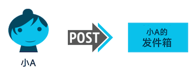
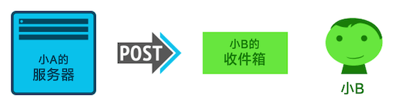
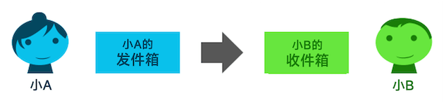

要了解自发布以来报告的任何错误或问题，请查阅 勘误表 。
另可参阅 翻译。
Copyright © 2018 W3C® (MIT, ERCIM, Keio, Beihang). W3C liability, trademark and permissive document license rules apply.
ActivityPub 协议是一个基于 [ActivityStreams] 2.0 数据格式的去中心化社交网络协议。它提供一套客户端到服务端的 API，用于创建、更新和删除内容，以及一套服务端间的联合 API，用于投递通知和 内容。
本节描述了本文档在发布时的状态。其它文档可能会取代本文档。当前 W3C 发布的文档列表以及本技术报告的最新版本参见 W3C 技术报告索引 (https://www.w3.org/TR/)。
本文档由 社交网络工作组 作为推荐规范发布。
欢迎所有相关方通过工作组的 问题追踪看板 提供实施情况、错误报告和其他意见。这些内容将由 社交网络社区组 进行讨论，并由小组成员考虑决定是否加入到本规范的未来版本。
请参阅工作组的 实现报告。
本文档已经过 W3C 会员、软件开发人员以及其他 W3C 小组和利益相关方的审核，并获指导组批准，成为 W3C 推荐规范。它是一份处于稳定版本的文档，可以作为参考资料或在其他文档中引用。W3C 在制定本推荐规范中的作用是引起大众对本规范的注意，并促进其广泛的部署。这提高了网络的功能与互操作性。
本文档由遵循 W3C 专利政策 的工作组编制。W3C 维护了一个与本小组交付成果相关的所有专利披露的公开列表；该页面还包含披露专利的说明。任何实际知晓某项专利，并认为此专利中含有其 基本权利要求 的个人，必须依照 《W3C 专利政策》第6节 进行信息披露。
本文档受 2017年3月1日的 W3C 过程文档 约束。
ActivityPub 协议有两部分：
ActivityPub 的实现可以只实现其中一种，也可以两种都实现。 不过，一旦实现了其中一种，实现另一种并不会太复杂， 两者都有诸多好处（使你的网站成为去中心化社交网络的一部分， 并能够使用能在各种社交网站上运行的客户端和客户端库）。
在 ActivityPub 中，用户通过其在服务器上的帐户以“行为体”的形式表示。 用户在不同服务器上的帐户对应于不同的行为体。 每个行为体都具有：
inbox （收件箱）：用于接收来自外界的消息outbox （发件箱）：用于向外界发送消息
它们都是端点，或者说，是在 ActivityPub 行为体的 ActivityStreams 描述中列出的 URL。 （稍后详细讨论 ActivityStreams）。
以下是我们的朋友小A的记录示例：
{"@context": "https://www.w3.org/ns/activitystreams",
"type": "Person",
"id": "https://social.example/alyssa/",
"name": "Alyssa P. Hacker",
"preferredUsername": "alyssa",
"summary": "一枚来自 MIT 的 Lisp 爱好者",
"inbox": "https://social.example/alyssa/inbox/",
"outbox": "https://social.example/alyssa/outbox/",
"followers": "https://social.example/alyssa/followers/",
"following": "https://social.example/alyssa/following/",
"liked": "https://social.example/alyssa/liked/"}
ActivityPub 使用 [ActivityStreams] 作为其术语表。 这很好，因为 ActivityStreams 已经包含了您在社交网络中表示所有活动和内容所需的常用术语。 ActivityStreams 很可能已经涵盖了您需要的所有术语，不过即使没有，您也可以通过[JSON-LD]扩展 ActivityStreams。 如果您了解 JSON-LD，您可以利用JSON-LD提供的优秀的关联数据方法。 如果不了解，也不用担心，JSON-LD 文档与 ActivityStreams 都可以按照传统的JSON来理解。 （当你需要添加扩展时，JSON-LD 会真正发挥作用）。
好的，我们考虑以下场景： 小A想和她的朋友们聊天，她的朋友们也想和她聊天。 此时，“收件箱”与“发件箱”可以帮助我们实现这一需求。 它们在 GET 和 POST 请求中的行为不同。 我们看一下它们是如何运作的：

总结一下：
当然，如果最后一种情况（向某人的发件箱发送 GET 请求）是查看别人发送消息的唯一方式，这就不是一个高效的联合协议了！ 实际上，联合通常由服务端进行，服务端将行为体要发送的消息发送到其他服务器上行为体的收件箱中。
让我们看一个例子。 假设小A想和她的朋友小B叙旧。 她最近借给他一本书，想让他读完后还给她。 以下是她撰写的消息，以 ActivityStreams 对象的形式呈现：
{"@context": "https://www.w3.org/ns/activitystreams",
"type": "Note",
"to": ["https://chatty.example/ben/"],
"attributedTo": "https://social.example/alyssa/",
"content": "话说，我借你那本书你读完了没？"}
这是一条发给小B的消息（note）。 小A将这条消息 POST 到自己的发件箱。

由于这是一个非活动对象，服务器会识别出这是一个新创建的对象，并将其包装在一个创建活动（Create actiivty）中。 （在 ActivityPub 中传递的活动通常遵循某个行为体对某个对象执行某种活动的模式。 在本例中，此活动是由一个 Person 发布的针对消息对象的创建活动）。
{"@context": "https://www.w3.org/ns/activitystreams",
"type": "Create",
"id": "https://social.example/alyssa/posts/a29a6843-9feb-4c74-a7f7-081b9c9201d3",
"to": ["https://chatty.example/ben/"],
"actor": "https://social.example/alyssa/",
"object": {"type": "Note",
"id": "https://social.example/alyssa/posts/49e2d03d-b53a-4c4c-a95c-94a6abf45a19",
"attributedTo": "https://social.example/alyssa/",
"to": ["https://chatty.example/ben/"],
"content": "话说，我借你那本书你读完了没？"}}
小A的服务器查找小B的 ActivityStreams 行为体对象，找到他的收件箱端点后，将小A的消息对象 POST 到他的收件箱。

严格来说，这分为两个独立的步骤……一个是从客户端到服务端的通信， 另一个是服务端之间的通信（联合）。但是，在本例中我们同时使用了这两种方式， 因此可以抽象地将其理解为一个消息从发件箱到收件箱的传递端过程：

很好，我们继续上面的场景示例。 一段时间后，小A检查了她收到的新消息。 她的手机通过 GET 请求轮询她的收件箱，结果在一堆朋友发布的猫咪视频 和她姐姐发的侄子的照片中，她看到了如下内容：
{"@context": "https://www.w3.org/ns/activitystreams",
"type": "Create",
"id": "https://chatty.example/ben/p/51086",
"to": ["https://social.example/alyssa/"],
"actor": "https://chatty.example/ben/",
"object": {"type": "Note",
"id": "https://chatty.example/ben/p/51085",
"attributedTo": "https://chatty.example/ben/",
"to": ["https://social.example/alyssa/"],
"inReplyTo": "https://social.example/alyssa/posts/49e2d03d-b53a-4c4c-a95c-94a6abf45a19",
"content": "<p>哦哦, 不好意思, 我明天就还你。</p>
<p>我在看注册机那一部分，我很久没写过这个了。</p>"}}
小A松了一口气，点赞了小B的帖文：
{"@context": "https://www.w3.org/ns/activitystreams",
"type": "Like",
"id": "https://social.example/alyssa/posts/5312e10e-5110-42e5-a09b-934882b3ecec",
"to": ["https://chatty.example/ben/"],
"actor": "https://social.example/alyssa/",
"object": "https://chatty.example/ben/p/51086"}
她将此消息 POST 到她的发件箱。 （由于这是一个活动，她的服务器不需要将其封装在创建对象中）。
由于感到很高兴，小A决定向她的粉丝发布一条公开消息。 很快，以下消息被发送给她粉丝集合中的所有成员，并且由于消息的目标地址包含特殊的公共（Public）组，任何人都可以读取这条消息。
{"@context": "https://www.w3.org/ns/activitystreams",
"type": "Create",
"id": "https://social.example/alyssa/posts/9282e9cc-14d0-42b3-a758-d6aeca6c876b",
"to": ["https://social.example/alyssa/followers/",
"https://www.w3.org/ns/activitystreams#Public"],
"actor": "https://social.example/alyssa/",
"object": {"type": "Note",
"id": "https://social.example/alyssa/posts/d18c55d4-8a63-4181-9745-4e6cf7938fa1",
"attributedTo": "https://social.example/alyssa/",
"to": ["https://social.example/alyssa/followers/",
"https://www.w3.org/ns/activitystreams#Public"],
"content": "有借有还，再借不难 :)"}}
除标记为非规范性的章节外，本规范中的所有撰写指引、图表、示例和注释都是非规范性的。规范中的其他所有内容均为规范性内容。
以下关键词 可以、必须、禁止、应当以及不应当， 应按照 [RFC2119] 中的描述进行解释。
本规范定义了两套紧密相关且相互作用的协议：
ActivityPub 规范的设计使得实现了这些协议中的一个后，支持另一个协议所需的额外工作将非常少。 但是，服务端仍可以仅实现其中一个协议。 这带来了三个一致性类别：
规范的某个部分仅适用于联合协议的实现时，均会明确指出。 此外，在指定要求时，会明确说明这些要求是针对客户端还是服务端（对于客户端到服务端协议而言），或是指服务端到服务端协议中的发送方或接收方服务器。
对象是 [ActivityStreams] 和 ActivityPub 两者构建的核心概念。 对象通常嵌套在活动中，包含在集合（Collections）的流中，而集合本身是对象的子类。 请参阅[活动术语表] 文档， 特别是 核心类部分； ActivityPub严格遵从该术语表的映射。
除 ActivityStreams 提供的术语外，ActivityPub 定义了一些额外的术语。
这些额外术语在 ActivityPub 的 JSON-LD 上下文
中定义，地址为 https://www.w3.org/ns/activitystreams。
实现者应当在其对象定义中包含ActivityPub上下文。
实现者可以根据需要添加附加上下文。
ActivityPub 沿用了与 ActivityStreams 相同的 URI / IRI 约定。
服务端应当验证其接收的内容，以避免内容欺骗攻击。 （服务端至少应该做到检查对象是否按原始状态接收，但如果可能，使用签名等机制会更好）。 本文档尚未权威性地指定特定的验证机制，但您可参阅安全注意事项以获取一些建议和最佳实践。
{
"@context": "https://www.w3.org/ns/activitystreams",
"type": "Like",
"actor": "https://example.net/~mallory",
"to": ["https://hatchat.example/sarah/",
"https://example.com/peeps/john/"],
"object": {
"@context": {"@language": "en"},
"id": "https://example.org/~alice/note/23",
"type": "Note",
"attributedTo": "https://example.org/~alice",
"content": "我是一只羊"
}
}
id 以确保其存在、为有效对象，且没有错误地表示该对象。
（在本例中，小M可能正在伪造一个据称由小A发布的对象）。
[ActivityStreams] 中的所有对象都应该具有唯一的全局标识符。 ActivityPub 扩展了此要求；以 ActivityPub 协议分发的所有对象必须具有唯一的全局标识符，除非它们是有意被设为瞬态的（例如某些类型的聊天消息或游戏通知等短生命周期且不需要能够被查找的活动）。 这些标识符必须属于以下类型之一：
null 对象的 ID，这意味着该对象是一个匿名对象（作为其上级上下文的一部分）
在服务端间通信中发布的活动必须提供标识符，除非该活动是有意被设为瞬态的。
但是，对于客户端到服务器的通信，接收到没有指定 id 的对象的服务器应在行为体的命名空间中分配一个对象 ID
并将其附加到接收到的对象之上。
所有对象都具有以下属性：
id 可以省略）。
可以针对对象的 id 属性使用 HTTP GET 方法以检索活动。
服务器可以按照 [RFC7231] 中的定义使用HTTP内容协商机制
来选择响应请求时返回的数据类型，
但必须在响应
application/ld+json; profile="https://www.w3.org/ns/activitystreams" 时给出ActivityStreams对象表示格式，
并应当在响应 application/activity+json 时也给出ActivityStreams表示格式。
客户端在检索活动时必须指定一个带有
application/ld+json; profile="https://www.w3.org/ns/activitystreams" 媒体类型的 Accept 标头。
服务端可以对不符合上述要求的请求实施其他行为。 （例如，服务器可能会实现额外的遗留协议，或 使用相同的URI同时提供资源的HTML和ActivityStreams格式）。
服务端可以根据B.1 身份验证和授权中的规定要求身份验证， 并且可以额外地实现其自身的授权规则。 对于未通过身份验证检查的请求，服务器应当返回适当的HTTP错误代码， 或者在对象的存在被认为是私密的情况下返回 403 Forbidden 错误码。 如果源服务器不希望披露私密目标的存在，可以改为返回 404 Not Found 状态码。
在 [Activity-Vocabulary]
中定义的所有属性之外，ActivityPub 通过源属性（source 属性）扩展了对象（Object）。
source属性作为一种出处形式，旨在传达某种来源，用于派生 content 标记，或支持客户端的后续编辑。
通常情况下，客户端会从 source 转换到 content ，而不是从 content 转换为 source。
source 的值本身就是一个对象，
使用其自身的 content 和 mediaType 字段提供来源信息。
{
"@context": ["https://www.w3.org/ns/activitystreams",
{"@language": "en"}],
"type": "Note",
"id": "http://postparty.example/p/2415",
"content": "<p>草莓 <em>十分地</em> 美味！</p>",
"source": {
"content": "草莓 *十分地* 美味！",
"mediaType": "text/markdown"}
}
通常情况下，最好让用户用最初撰写内容的源格式编辑原始文章。
但客户端不一定能为所有源类型提供可靠的友好界面，另外，由于客户端负责将 source 转换为 content，
某些客户端可能会使用其他客户端不知道如何处理的媒体类型。
尽管客户端理论上可以提供可编辑的 content 标记并忽略源格式，但这意味着用户在今后的修改中将丢失其首选的理想 source 格式。
因此，这样做的客户端应当提供一个微不足道的警告，说明原始源格式未被识别并将被忽略。
举例来说，小A喜欢使用自己开发的Emacs客户端，通过 Org mode 在她的ActivityPub博客上发文。
后来她转而使用手机客户端编辑，而该客户端完全不知道 text/x-org 是什么，也不知道如何将其渲染为HTML，
所以它提供了一个文本框来编辑原始的 content。
编辑区上方会显示一个有帮助的警告："这最初是用另一种我们无法处理的标记语言编写的。如果您进行编辑，将会丢失原始来源文本！"
小A认为修复小小的拼写错误不值得失去她精心制作的org-mode标记，于是决定等到回家再进行更新。
ActivityPub 行为体通常是
ActivityStreams 行为体类型 之一，
但并非必须如此。例如，
账户 对象
可以作为行为体，也可作为一个从 ActivityStreams 扩展的类型。
检索行为体的方式与检索 ActivityPub 中的任何其他对象相同。
与其他 ActivityStreams 对象一样，行为体拥有一个 id，
它是一个 URI。
当直接输入到用户界面（例如登录表单）时，最好支持简化的命名方式。
为此，应当 执行以下 ID 规范化操作：
example.org/alice/，客户端可以尝试回落到
一个默认协议，最好是 https。
确定了行为体的 URI 后，应当对其进行解引用。
除 3.1 对象标识符 中强制要求的属性外，行为体对象必须 具有以下属性：
OrderedCollection
（有序集合）的引用，该集合包含行为体接收到的所有消息；参见
5.2 收件箱。
OrderedCollection （有序集合），包含行为体创建的所有消息；参见
5.1 发件箱。
此外，ActivityPub 实现应当提供以下属性：
实现可以 提供以下属性：
{
"@context": ["https://www.w3.org/ns/activitystreams",
{"@language": "ja"}],
"type": "Person",
"id": "https://kenzoishii.example.com/",
"following": "https://kenzoishii.example.com/following.json",
"followers": "https://kenzoishii.example.com/followers.json",
"liked": "https://kenzoishii.example.com/liked.json",
"inbox": "https://kenzoishii.example.com/inbox.json",
"outbox": "https://kenzoishii.example.com/feed.json",
"preferredUsername": "kenzoishii",
"name": "石井健蔵",
"summary": "この方はただの例です",
"icon": [
"https://kenzoishii.example.com/image/165987aklre4"
]
}
实现可以额外提供以下属性：
endpoints 映射可以包含以下属性：
x-www-form-urlencoded 格式提交 id 参数，参数值为要请求的 ActivityStreams 对象的
id。
sharedInbox 端点也应该是公开可读的 OrderedCollection 对象，其中包含寻址到公共特殊集合的对象。
从 sharedInbox 端点读取内容时，禁止呈现未寻址到公共（Public）端点的对象。
[ActivityStreams] 是 ActivityPub 的上游术语表，任何适用于 [ActivityStreams] 的属性都可以在 ActivityPub 行为体上使用。 在此特别强调以下 ActivityStreams 属性，以演示它们在 ActivityPub 实现中的使用方法。
id，则指向行为体“账户页面”的链接。
包含自然语言值的属性（如 name、preferredUsername 或 summary）使用在
ActivityStreams 中定义的自然语言支持。
[ActivityStreams] 定义了集合（collection）的概念；而 ActivityPub 定义了若干具有特殊行为的集合。 请注意，ActivityPub 使用 ActivityStreams 的分页机制 来遍历大型对象集合。
请注意，这些集合中，部分集合被明确规定为 OrderedCollection
类型，而另一些则可以是 Collection
或者
OrderedCollection。
OrderedCollection 必须统一以时间倒序（从新到旧）呈现。
用于确定时间倒序的属性特意被留作实现细节处理。 例如，许多 SQL 风格的数据库使用递增整数作为标识符，这在大多数情况下可以合理地处理插入顺序。 对于其他数据库，使用插入时间戳可能更为合适。 所使用的属性本身并不重要，但元素的顺序必须保持原样，即新的条目在前。 不应使用会被经常更改的字段，例如“上次更新”时间戳。
行为体通过 outbox 属性在其配置文件中暴露发件箱，供
ActivityPub 服务发现。
outbox 必须是一个 OrderedCollection（有序集合）。
发件箱流包含用户已发布的活动，但具体包含的内容取决于发起请求的用户获取活动的权限（即，outbox 的内容会根据读取者的权限进行过滤）。 如果用户提交了一个未进行 身份验证 的请求，服务端应返回用户所有的 公开 帖文。 这可能包括用户发布的所有相关对象，但可用条目的数量由软件实现与服务器管理员自行决定。
发件箱接受 HTTP POST 请求，其行为参见 客户端到服务端交互 部分。
行为体通过 inbox 属性在其配置文件中暴露收件箱，供 ActivityPub 服务发现。
inbox 必须是一个 OrderedCollection
（有序集合）。
收件箱流包含行为体接收到的所有活动。 服务端应当根据请求者的权限筛选内容。 通常情况下，收件箱的拥有者可以访问收件箱的全部内容。 根据访问控制规则，某些其他内容可能公开，若其它不拥有收件箱的用户也可以在特定条件下访问收件箱，则可能需要进行身份验证。
服务端必须对通过收件箱返回的活动进行去重。
若同一活动既发送给行为体的粉丝，也直接发送给特定的关联行为体，但服务端未能对收件方列表进行去重，则可能产生重复。
此类去重必须通过比较活动的 id 实现，并去除任何已存在的活动。
能够进行联合的服务端上的行为体的收件箱可接受 HTTP POST 请求，其行为参见 信息投递 部分。 不进行联合的服务端应当在接收到 POST 请求时返回 405 Method Not Allowed。
每个行为体应当拥有一个
followers （粉丝）集合。
这是一个包含所有对该行为体发送过关注活动的行为体的列表，行为体被添加到粉丝集合是收到关注活动的一个
副作用（side effect）。
可以通过该集合找到所有关注当前行为体的用户的列表。
followers （粉丝）集合必须 是
OrderedCollection （有序集合）
或
Collection （集合）
类型，且 可以根据执行身份验证的用户的权限或在未进行身份验证时进行适当过滤。
关注活动通常可被理解为查看某个行为体创建的对象的请求。 这使粉丝集合成为接收 投递的合适默认目标。
每个 行为体都
应当 拥有一个 following （关注）集合。
这是该行为体关注的所有人的列表，行为体被添加到关注集合是发送关注活动的一个
副作用。
following （关注）集合 必须 是
OrderedCollection （有序集合）
或
Collection （集合）
类型，且 可以根据执行身份验证的用户的权限或在未进行身份验证时进行适当过滤。
每个行为体可以 拥有一个
liked （点赞）集合。
这是该行为体产生的所有 Like （点赞）活动中所有对象的列表，这些对象被添加到点赞集合是
产生点赞活动的一个
副作用。
liked （点赞）集合 必须 是
OrderedCollection （有序集合）
或 Collection （集合）
类型，并且可以根据执行身份验证的用户的权限或在未进行身份验证时进行适当过滤。
除 [ActivityStreams]
集合与对象之外，活动还可以被寻址到特殊的“公共”集合，其标识符为 https://www.w3.org/ns/activitystreams#Public。
例如：
{
"@context": "https://www.w3.org/ns/activitystreams",
"id": "https://www.w3.org/ns/activitystreams#Public",
"type": "Collection"
}
寻址到此特殊 URI 的活动应可供所有用户访问，无需身份验证。
实现不得将活动传递到“公共”集合；它无法接收实际的活动。
然而，行为体 可以 拥有一个 sharedInbox
端点，用于高效共享与传递公开帖文（以及仅对粉丝可见的帖文）；请参阅
7.1.3 共享收件箱投递。
使用 ActivityStreams JSON-LD 上下文压缩 ActivityStreams 对象可能会导致
https://www.w3.org/ns/activitystreams#Public
被简单表示为 Public 或 as:Public，它们都是公共集合的有效表示形式。
若实现将 ActivityStreams 对象简单视为 JSON，而非使用 JSON-LD 工具将传入的活动转换为本站上下文，则应当意识到这一点，且应该准备好接受全部三种表示形式。
每个对象 可以 拥有一个 likes （点赞列表）集合。
这是所有以该对象作为 object 属性的 Like （点赞）活动的列表，这些活动被添加到点赞列表集合是处理过程中的一种
副作用 。
likes （点赞列表）集合 必须 是 OrderedCollection
（有序集合）
或 Collection （集合）
类型，并且 可以 根据执行身份验证的用户的权限或在未进行身份验证时进行适当过滤。
应注意不要将 likes （点赞列表）集合与名称相似但不同的 liked （点赞）集合混淆。
总而言之：
Like （点赞）活动的集合，
点赞活动被添加到点赞集合是其
被投递到发件箱的副作用。
Like （点赞）活动的集合，
点赞活动被添加到点赞列表集合是其
被投递到收件箱的副作用。
[ActivityStreams] 定义的活动是 在社交图谱中创建、修改和共享内容的核心机制。
客户端与服务器的交互是通过客户端将活动发布到某个行为体的发件箱来完成的。
客户端必须从行为体的
档案中发现其发件箱的 URL，
然后通过 HTTP POST 请求将数据发送到该 URL，该 POST 请求的 Content-Type 应为
application/ld+json; profile="https://www.w3.org/ns/activitystreams"。
服务端可以将值为 application/activity+json 的 Content-Type 或 Accept
标头解释为等同于 application/ld+json; profile="https://www.w3.org/ns/activitystreams" 的内容类型，从而支持客户端与服务器的交互。
请求必须经过该 outbox 所属用户的凭证认证。
POST 请求的正文必须包含单个活动（其中可以
包含嵌入的对象），或包含单个非活动对象，这种对象
将由服务端封装在一个创建活动中。
POST /outbox/ HTTP/1.1
Host: dustycloud.org
Authorization: Bearer XXXXXXXXXXX
Content-Type: application/ld+json; profile="https://www.w3.org/ns/activitystreams"
{
"@context": ["https://www.w3.org/ns/activitystreams",
{"@language": "en"}],
"type": "Like",
"actor": "https://dustycloud.org/chris/",
"name": "Chris 点赞了 '最小 ActivityPub 更新客户端'",
"object": "https://rhiaro.co.uk/2016/05/minimal-activitypub",
"to": ["https://rhiaro.co.uk/#amy",
"https://dustycloud.org/followers",
"https://rhiaro.co.uk/followers/"],
"cc": "https://e14n.com/evan"
}
如果提交的 Activity 对象的 id 属性有值，服务端必须忽略该值并为该 Activity 生成新的
id。
服务器必须返回 201 Created HTTP 状态码，且必须在 Location 标头中包含新的 id，除非该活动是瞬态的。
HTTP/1.1 201 Created
Location: https://dustycloud.org/likes/345
在投递之前，服务端必须从 ActivityStreams 对象中移除 bto 和/或 bcc
属性（只要上述属性存在），但必须利用最初存储于 bto/bcc 属性上的地址信息来确定
投递的收件方。
随后，服务端必须将这个新的活动添加至 发件箱集合。 根据活动的类型，服务端可能需要执行额外的后续操作。 （然而，无法保证活动会即时出现在发件箱中。 活动可能会延迟显示，或在某一时间点被移除）。 每种类型的活动的说明参见下文。
如果尝试向不支持客户端-服务端交互的服务端提交对象，
服务端应当返回 405 Method Not Allowed 响应。
在适当情况下，HTTP 缓存机制 [RFC7234]， 应当在客户端接收服务端响应时与服务端发送响应至客户端时被遵守。
客户端负责正确地为新活动设定目标地址。
在某种程度上，这取决于客户端的特定实现，但客户端必须注意，服务端只会将新的活动转发给 to、
bto、cc、bcc和audience 字段中的地址。
粉丝集合和/或 公共集合 是作为新活动默认目标地址的良好选择。
客户端应当查看通过 object、target、inReplyTo
和/或 tag 字段被附加到新活动中的任何对象，获取它们的 actor 或 attributedTo 属性，且
可以获取它们的地址信息并将其添加到创建的新活动的 to 或 cc 字段中。
客户端可以递归处理附加对象，但如果这么做，
应当设置递归层级限制。
（注意，这并不表示客户端应将被列为接收方的行为体集合逐一展开为独立的收件方）。
客户端可以允许用户在界面上修改该目标地址。
例如，当 Chris 点赞 Amy 撰写的以下文章时：
{
"@context": ["https://www.w3.org/ns/activitystreams",
{"@language": "en-GB"}],
"id": "https://rhiaro.co.uk/2016/05/minimal-activitypub",
"type": "Article",
"name": "最小 ActivityPub 更新客户端",
"content": "今天我写完了 morph 这个用来发布 ActivityStreams2 内容的客户端...",
"attributedTo": "https://rhiaro.co.uk/#amy",
"to": "https://rhiaro.co.uk/followers/",
"cc": "https://e14n.com/evan"
}
客户端可按如下所示生成点赞活动:
{
"@context": ["https://www.w3.org/ns/activitystreams",
{"@language": "en"}],
"type": "Like",
"actor": "https://dustycloud.org/chris/",
"summary": "Chris 点赞了 '最小 ActivityPub 更新客户端'",
"object": "https://rhiaro.co.uk/2016/05/minimal-activitypub",
"to": ["https://rhiaro.co.uk/#amy",
"https://dustycloud.org/followers",
"https://rhiaro.co.uk/followers/"],
"cc": "https://e14n.com/evan"
}
接收方的发件箱可以执行投递操作，将活动投递给 Chris （点赞者）的粉丝、Amy 以及 Amy 的粉丝和 Evan，因为他们都收到了原始文章。
在向 outbox （发件箱）提交以下活动时，客户端必须在活动中提供 object 属性：
Create、Update、Delete、
Follow、Add、Remove、
Like、Block、Undo。
此外，在提交以下活动时，客户端必须同时向发件箱提供 target 属性：
Add、Remove。
Create （创建）活动用于发布新对象。
这会产生副作用，即创建了一个嵌入在活动中（位于 object 属性）的对象。
发布 Create 活动时，活动的 actor 应当被复制到对象的
attributedTo 字段中。
创建活动与其 object 的寻址不匹配可能会导致混淆。
因此，服务端在分发开始时应当将创建活动的所有接收方复制到其 object，同样地，也应将
object 的接收方复制到封装的创建活动中。
需要注意的是，之后可以更改 object 的地址而不更改 Create 的地址（例如，通过 Update 活动进行更改）。
客户端向服务端发布内容时，可提交一个对象以进行创建，而无需将其包装在活动中。
服务端必须接受客户端通过 POST 请求向发件箱发送的合法 [ActivityStreams] 对象。该对象不能是
Activity 的子类型。
随后，服务端必须将此对象附加到创建活动的 object。
对于非临时对象，服务端必须为封装的 Create 活动及其封装的 Object 都附加一个
id。
服务端返回的 Location 值应该是新的创建活动的 URL，而不是对象的 URL。
服务端必须将对象中指定的所有
to、bto、cc、bcc与audience 属性复制到新的创建活动中。
{
"@context": "https://www.w3.org/ns/activitystreams",
"type": "Note",
"content": "这是一条 note",
"published": "2015-02-10T15:04:55Z",
"to": ["https://example.org/~john/"],
"cc": ["https://example.com/~erik/followers",
"https://www.w3.org/ns/activitystreams#Public"]
}
{
"@context": "https://www.w3.org/ns/activitystreams",
"type": "Create",
"id": "https://example.net/~mallory/87374",
"actor": "https://example.net/~mallory",
"object": {
"id": "https://example.com/~mallory/note/72",
"type": "Note",
"attributedTo": "https://example.net/~mallory",
"content": "这是一条 note",
"published": "2015-02-10T15:04:55Z",
"to": ["https://example.org/~john/"],
"cc": ["https://example.com/~erik/followers",
"https://www.w3.org/ns/activitystreams#Public"]
},
"published": "2015-02-10T15:04:55Z",
"to": ["https://example.org/~john/"],
"cc": ["https://example.com/~erik/followers",
"https://www.w3.org/ns/activitystreams#Public"]
}
Update 活动用于更新现有对象。
其副作用是：假设行为体有权更新目标对象，则必须修改 object 以反映更新活动中定义的新结构。
在客户端到服务端的交互中，更新只影响对象的一部分；不是一次性更新整个文档，而是使用客户端提供的任何键值对将现有值替换为新值。
这仅适用于更新目标对象的顶层字段。
一个例外情形是：当值为 JSON null 类型时，服务端应该从对象中移除对应的字段。
请注意，此行为适用于客户端向服务端发送数据的交互，其中客户端仅向服务端发送数据。 服务器端间的交互及服务端到客户端的更新应该包含更新后的对象的完整表示。 有关更多详细信息，请查阅 服务器端间交互情形下的更新活动 中的描述。
Delete 活动用于删除现有对象。
其副作用是，服务端可以将 object 替换为其 Tombstone
（墓碑），该墓碑将显示在引用已删除对象的活动中。
如果某一实体请求已删除的对象，服务端应当在响应正文中展示了 Tombstone 对象的情形下使用 HTTP 410
Gone 状态码进行响应，否则使用 HTTP 404 Not Found 进行响应。
一个已删除的对象示例如下:
{
"@context": "https://www.w3.org/ns/activitystreams",
"id": "https://example.com/~alice/note/72",
"type": "Tombstone",
"published": "2015-02-10T15:04:55Z",
"updated": "2015-02-10T15:04:55Z",
"deleted": "2015-02-10T15:04:55Z"
}
Follow 活动用于订阅另一个行为体的活动。
在 发件箱 中收到该活动的副作用是，服务端
应当 且仅应当在随后收到以该 Follow 活动为对象的 Accept 活动时将
object 添加到 actor 的 following 集合
中。
在发件箱 中收到 Add 活动时，服务端
应当 将 object 添加到 target 属性定义的集合中，除非：
target 不被接收到活动的服务端所有，因而接收到活动的服务端无权更新它。
object 不允许被添加到 target 集合中。
在 发件箱 接收到 Remove 活动时，服务端
应当 从 target 属性定义的集合中移除 object，除非：
target 不被接收到活动的服务端所有，因而接收到活动的服务端无权更新它。
object 不允许被从 target 集合中移除。
Like 活动表示 actor 对 object 表示喜欢。
在 发件箱 中接收到该活动的副作用是，服务端
应当 将 object 添加到
actor 的 liked 集合 中。
Block 活动用于表示发布此活动的行为体不希望另一个行为体（由 object 属性定义）能够与其发布的对象进行交互。
服务端 应当 阻止被屏蔽的用户与任何由该行为体发布的对象交互。
服务器 不应 将屏蔽活动传递给其
object。
Undo 活动用于撤销之前的活动。
请参阅活动术语文档中关于
逆活动与“撤销”的内容。
例如，Undo 可用于撤销之前的 Like、
Follow 或 Block。
撤销活动与被撤销的活动必须由同一个行为体发布。
应尽可能撤销副作用。
例如，如果撤销 Like，应相应递减之前已递增的计数器。
在一些情况下，如果已存在明确的“逆活动”，应使用该逆活动。
基于 Create 的活动应改为使用 Delete，基于 Add 的活动应改为使用 Remove。
联合式服务端 必须 根据 发件箱投递 的规定，对所有发布到 发件箱 的活动执行投递。
本节为非规范性内容。
服务端可以支持上传某些文档类型（如图片、视频或其他二进制数据）， 以便在活动中引用，但具体机制不在本版 ActivityPub 规范的范畴内。 社交网络社区讨论组正在通过 ActivityPub 媒体上传报告 细化该协议。
服务端通过向行为体的收件箱端点发送活动来与其他服务端通信，并在社交图谱中传播信息。
通过网络发送的活动应当拥有一个 id，除非其被有意设为临时性活动（在此情形下，它可以省略 id）。
POST 请求（例如发送到收件箱的 POST 请求）必须使用
application/ld+json; profile="https://www.w3.org/ns/activitystreams" 的内容类型，
而 GET 请求（另见 3.2 检索对象）则使用
application/ld+json; profile="https://www.w3.org/ns/activitystreams" 的 Accept 标头。
对于服务端间交互的情形，服务端应当将 application/activity+json 的内容类型或 Accept
标头解释为等同于 application/ld+json; profile="https://www.w3.org/ns/activitystreams"。
为了在整个社交图谱中传播更新，活动会被发送到相应的接收方。 服务端首先跟随对象之间的相应链接，直至到达一个行为体，将这个链接指向的行为体确定这些接收方，随后将活动插入到行为体的收件箱中（这就是投递）。 这使得接收活动的服务端可以：
投递通常在以下情形被触发，例如：
向其他服务端上的行为体的 inbox 或 sharedInbox 属性执行投递的服务端必须在以下活动中提供 object 属性：
Create、Update、Delete、
Follow、Add、Remove、
Like、Block、Undo。
此外，执行以下活动的服务端间投递的服务端必须也提供 target
属性：Add、Remove。
在从其他服务端接收响应，以及向其他服务端发送响应时，应当酌情遵守 HTTP 缓存机制[RFC7234]。
以下内容仅适用于相互通信的联合式服务端。
通过首先查找目标的收件箱，然后将活动发布到查找到的收件箱，即可将活动投递到其目标（即行为体）。
通过检查 ActivityStreams
目标地址来确定投递目标；即活动的 to、bto、cc、
bcc 和 audience 字段。
收件箱的确定方法是先检索目标行为体的 JSON-LD 表示，
然后查找 inbox 属性。
如果接收方是 Collection 或 OrderedCollection，则服务端必须（使用用户的凭据）解引用该集合，并发现集合中每个条目的收件箱。
服务端必须限制通过集合执行的递归层数，该层数可以为一层。
服务端必须对最终接收方列表进行去重。服务端必须从接收方列表中排除与正在发起通知的活动的 actor（行为体）相同的行为体。
也就是说，行为体不应该将自己的活动投递给自己。
在活动未指定接收方时应如何操作暂未定义，但目前的建议是：如果未指定接收方，则对象保持完全私有，且访问控制应限制对对象的访问。 如果发送到的对象仅为“public”集合，则该对象不会投递给任何行为体，但可以在行为体的发件箱中公开查看。
确定接收方列表后，服务端（使用提交用户的授权）向收件箱发出 HTTP POST
请求，并将活动作为请求正文。
接收方将此活动作为 item 添加到收件箱 的有序集合
(OrderedCollection) 中。
尝试向非联合式服务端上的收件箱进行投递应当导致 405 Method Not Allowed 响应。
对于向第三方服务端执行投递操作的联合式服务端，投递应当异步执行，且如果由于网络错误而投递失败，服务端应当 再次尝试向接收方投递。
注意：在同一来源的行为体之间分发的活动可以使用任何内部机制，并且不需要使用 HTTP。
虽然理解本规范不需要阅读以下内容，但值得注意的是，ActivityPub 的定位和投递机制与
链接数据通知规范重叠，且二者可以以可互操作的方式进行组合。
特别地，ActivityPub 与链接数据通知之间的 inbox 属性相同，并且本文档中描述的定位和投递系统也受链接数据通知支持。
除 JSON-LD 格式的压缩 ActivityStreams 文档外，链接数据通知还支持 ActivityPub 实现不需要的许多 RDF 序列化方法。
但是，希望与链接数据通知实现更广泛兼容的 ActivityPub 实现可能希望支持其他 RDF 表示。
对同时支持 客户端到服务端交互和 服务端间交互的服务端而言：当在发件箱中接收到对象时， 服务端必须定位并将其投递到：
to、bto、cc、
bcc 或 audience 字段的值（只要上述字段的值为由个人或行为体拥有的集合）。
这些字段由将活动发往发件箱的客户端适当地填充。
以下部分是为了缓解偶尔会在联合式网络上产生的“幽灵回复”问题。 我们最好用一个例子来解释这个问题。
小A 发布了一篇关于她成功在会议上发表论文的帖文，并将其发送到她的粉丝集合，其中包括她的朋友 小B。 小B 回复 小A 的消息祝贺她，并在接收方中包含了 小A 的粉丝集合。 但是，小B 无法查看 小A 的粉丝集合的成员，因此他的服务端不会将他的消息转发到他们的收件箱。 如果没有以下机制，如果 小A 随后回复 小B，她的粉丝会看到 小A 回复 小B，但从未见过 小B 互动。 这会非常令人困惑！
当在收件箱中接收到活动时，服务端需要将这些活动转发给源服务端无法投递到的接收方。
为此，服务端必须定位并将活动投递到 to、cc 和/或
audience
的值，前提是以下所有条件均为真：
to、cc 和/或 audience 的值包含由服务端拥有的集合。
inReplyTo、object、
target 和/或 tag 的值是服务端拥有的对象。
服务端应当递归遍历上述属性的值，以查找服务端拥有的链接对象，切应当设置递归最大限制（即，忽略嵌套层数太深以至于接收方的粉丝可能不介意
他们是否不再收到不直接涉及接收方的更新的情形）。
服务端必须仅定位正在转发的原始对象上的 to、cc 和/或
audience 的值，
且在递归遍历链接对象时不获取任何新的收件方（以防止这些收件方被客户端有意修改）。
服务端可以根据特定于实现的规则（例如，骚扰信息过滤）过滤其投递目标。
在 inbox 中接收 Create 活动几乎没有副作用；该活动应当出现在行为体的
inbox 中，且服务端可能会希望在本地存储此活动及其附带对象的表示形式。
然而，这通常在处理投递到 inbox 的活动时也会发生。
对于服务端间交互，Update 活动意味着接收活动的服务端应当将其具有相同 id
的 object 副本更新为 Update 活动中提供的副本。
与 客户端到服务端处理更新活动 不同，
这不是部分更新，而是对象的完全替换。
接收服务端必须注意确保发起 Update 活动的行为体被授权修改目标 object。
这至少可以通过确保 Update 及其 object 具有相同的来源来完成。
接收此活动的副作用是（假设 object 被发送活动的行为体/服务端拥有），接收删除活动的服务端 应当删除其对具有相同
id
的 object 的表示形式，并且可以用 Tombstone 对象替换该表示形式。
（请注意，在活动从源服务端传输到外站服务端后，ActivityPub 协议中没有任何内容可以强制远程删除对象的表示形式）。
在收件箱中接收此活动的副作用是，服务端应当生成一个 Accept 或
Reject 活动，
其中 Follow 作为 object，并将其投递到发出 Follow 的 actor。
Accept 或 Reject 可以自动生成，也可以是用户输入的结果（可能在用户进行审核后有所延迟）。
尽管如此，服务端可以选择不显式发送 Reject 以响应该 Follow，
实现者应当意识到发送请求的服务端可能会处于中间状态。例如，服务端可能不会发送 Reject 以保护用户的隐私。
如果接收到引用此 Follow 为对象的 Accept，服务端应当将
actor
添加到目标行为体的粉丝集合中。
如果接收到的活动是 Reject，服务端禁止将发送Follow活动的行为体添加到目标行为体的粉丝集合中。
有时可能会发生成功的 Follow 订阅，但在之后的某个时间点，向该名粉丝进行投递会失败很长一段时间。
实现者应当意识到无法保证网络上的行为体始终可被访问，并且应当进行相应的实现。
例如，如果尝试向一个行为体投递长达六个月，而粉丝仍然无法访问，则进行投递的服务端可以将这个无法访问的行为体从 followers 列表中移除。
处理无法访问的行为体的时间范围和行为由投递服务端自行决定。
在收件箱中接收此活动的副作用取决于接收到的 object 的类型，并且可以接受本文档中未描述的类型（例如，Offer）。
如果向收件箱接收的 Accept 的 object 是接收方先前发送的 Follow 活动，
则服务端应当将 actor 添加到接收方的关注集合。
在收件箱中接收此活动的副作用取决于接收到的 object 的类型，并且可以拒绝本文档中未描述的类型（例如， Offer）。
如果向收件箱接收的 Reject 的 object 是接收方先前发送的 Follow 活动，
则表示接收方未批准 Follow 请求。服务端禁止将 actor 添加到接收方的关注集合。
在收件箱收到 Add 活动后，服务端应当将 object
添加到 target 属性中指定的集合，除非：
target 不由接收服务端所有，因此服务端无法更新 target。
object 添加到 target 集合，
这由接收方自行决定。
在收件箱收到 Remove 活动后，服务端应当从
target 属性中指定的集合中移除
object，除非：
target 不由接收服务端所有，因此服务端无法更新 target。
target 集合中移除 object，这由接收方自行决定。
在收件箱中收到此活动的副作用是，如果存在 likes 集合，
则服务端应当通过将接收到的活动添加到该集合来增加目标对象的点赞计数。
在收件箱中接收到 Announce 活动后，如果存在 shares集合，则服务端应当通过将接收到的活动添加到该集合来增加对象的分享计数。
Announce 活动实际上就是其他社交网络中所说的“分享”、“转发”或“推荐”。
Undo 活动用于撤销先前活动的副作用。
请参阅 ActivityStreams 文档中关于
逆活动与“撤销”的内容。
Undo 活动的范围和限制与
客户端到服务端交互场景下的撤销活动相同，但应用于联合上下文。
本节为非规范性内容。
在一个联邦网络中，建立一个国际化的用户群体非常重要。
ActivityStreams 提供了内容国际化的工具，
应尽可能使用这些工具。
然而，对于实现者而言，确定将哪些
@language 属性
用于用户提交的内容可能会很困难。
W3C
国际化小组
提供了有关
语言检测的指导。
本节为非规范性内容。
服务端不应信任客户端提交的内容，联合式服务端也不应在没有某种形式验证的情况下信任由其他非内容来源服务端接收的内容。
服务端应谨慎验证新内容是否确由其声明的行为体发布，并验证该行为体是否有权更新其声明要更新的资源。 另请查阅 3. 对象 及 B.1 身份验证与授权。
在开发过程中，本地运行测试通常很方便。 然而，在生产环境中的客户端或服务端实例中允许请求本地 URI 是危险的。 对不需要授权的本地 URI 发出请求，可能会无意中访问或修改默认被 localhost 保护的资源。
如果您的 ActivityPub 服务端或客户端允许在开发目的中对本地 URI 发出请求，请考虑使其成为一个默认关闭的配置选项。
除了 http 与 https，还有许多类型的 URI。
某些处理不同 URI 方案请求的库可能试图进行智能化处理，并引用非预期的 URI 方案，例如 file。
客户端和服务端作者应仔细检查相关的库如何处理这些请求，并在条件允许的情况下仅放行某些安全的 URI 类型，例如 http 和 https。
服务端应设置解析对象时递归的深度限制，或对带有递归引用的 ActivityStreams 对象进行特别处理。 未能规范地处理这些对象可能导致拒绝服务（DoS）安全漏洞。
在任何网络中骚扰信息都是一个问题，在联合式网络中尤其如此。 虽然 ActivityPub 并未提供专门的骚扰防范机制，但建议服务端通过某种骚扰信息过滤机制过滤来自本站的不受信任用户和任何外站用户传入的内容。
服务端应实现防止来自其他联邦服务端的拒绝服务攻击的保护措施。 例如，可以使用某种速率限制机制完成此操作。 特别是在涉及处理有副作用的活动时应仔细实施这一保护。 服务端嗨 应当 注意不会因提交的信息量过大而导致对其他服务端的过载，例如通过使用指数退避策略规避这一点。
服务端应对 API 客户端提交内容进行速率限制。 这样做有两个目的：
为防止客户端因特大集合超载，服务端应注意限制返回给客户端的集合页大小。 客户端也应准备好限制他们可以处理的响应大小，以防连接到恶意或被入侵的服务端，例如通过超时并生成错误来缓解这一点。
任何为浏览器（或其他支持富文本应用程序）渲染的活动字段都应注意清洗包含标记的字段，以防止跨站脚本攻击。
本规范已经规定 bto 和 bcc 必须在投递前被移除，
但服务端可以自由决定如何在其自身存储系统中表示对象。
然而，由于 bto 和 bcc 仅为了让对象/活动的原作者知晓或看到，服务端在对外展示时也应省略这些属性。
本节为非规范性内容。
本规范来自许多社区在 Web 联合领域多年经验和努力的结晶。 特别是，本规范的许多内容受到了 OStatus 和 Pump API 的启发，这些均由 StatusNet （现为 GNU Social）和 Pump.io 首创。 这些项目是许多开发人员勤奋工作的成果，而 Evan Prodromou 在这一领域起到了至关重要的领导作用。 如果没有他的努力，ActivityPub 很可能不会以现在的形态存在。
Erin Shepherd 构建了本规范的初始版本，其核心理念来源于 Pump API 文档，其中大部分文本被完全重写，同时从 ActivityStreams 1 转换到 ActivityStreams 2，但主要思想仍然保持一致。
当标准移交给 W3C 社交网络工作组时，Jessica Tallon 和 Christine Lemmer-Webber 接手成为编辑者，并完成了从 Erin Shepherd 的文档到当前状态 ActivityPub 的大部分过渡。本规范的大部分内容是在社交网络工作组的长期反馈过程中重写和重新组织的。
ActivityPub 是在 W3C 社交网络工作组许多成员的精心投入形成的。 ActivityPub 特别感谢 Amy Guy，她将不同社交网络工作组文件的理念进行映射，例如她在 [Social Web Protocols] 上的卓越工作。 Amy 和 Christopher Allan Webber 一起通过四天的冲刺，为 ActivityPub 规范的重大重构奠定了基础。这些修订使客户端到服务端和服务端间部分之间的分界更加清晰，同时明确了 ActivityPub 与 [LDN] 的关系，以及许多其他改进。 特别感谢 Benjamin Goering 制作了实现报告模板。 同时感谢 mray 设计了出色的教程插图（这些插图与本文档其余部分的许可一致）。
许多人通过一丝不苟地审阅帮助了 ActivityPub。其中，特别感谢： Aaron Parecki、 AJ Jordan、 Benjamin Goering、 Caleb Langeslag、 Elsa Balderrama、 elf Pavlik、 Eugen Rochko、 Erik Wilde、 Jason Robinson、 Manu Sporny、 Michael Vogel、 Mike Macgirvin、 nightpool、 Puck Meerburg、 Sandro Hawke、 Sarven Capadisli、 Tantek Çelik，及 Yuri Volkov。
谨将此文档献给地球上的所有公民。 您应享有通讯自由的权利； 我们希望我们为之付出的努力，即使微不足道，也能有所帮助。
1.1 社交网络工作组
ActivityPub 是社交网络工作组正在制定的几个相关规范之一。 对其他方法与补充协议感兴趣的实现者应查阅 [Micropub] 及其概述文档 [社交网络协议]。